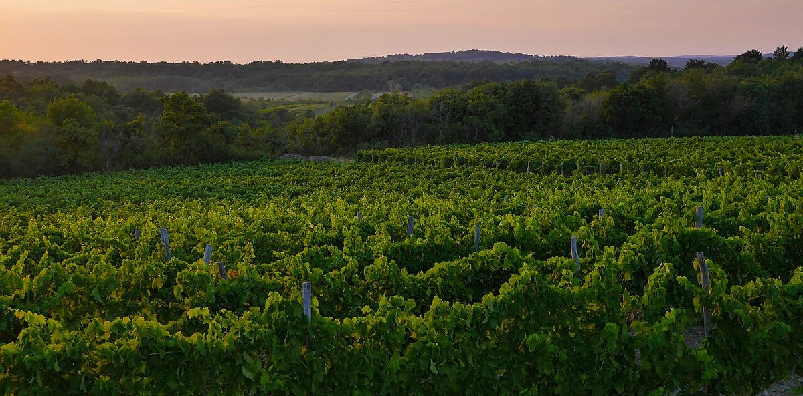

Croacia
Croacia reúne dos mundos vitícolas: el continental, dominado por los blancos de Graševina, y el adriático, de Istria a Dalmacia, con tintos de Plavac Mali y una gran riqueza de variedades autóctonas. Es además la tierra de origen de la uva conocida en California como Zinfandel.

Historia
La costa y las islas del Adriático oriental cuentan con una de las tradiciones vitícolas más antiguas de Europa. Los colonos griegos que se establecieron en islas como Vis, Hvar o Korčula a partir del siglo IV a. C. cultivaron la vid, y los romanos la extendieron después por toda la región. En la Edad Media y la Edad Moderna la costa dálmata estuvo largo tiempo bajo dominio veneciano, mientras que el interior quedó vinculado a Hungría y a los Habsburgo, lo que explica en parte las diferencias entre las tradiciones vitícolas de la costa y del continente.
En el siglo XIX la filoxera llegó a Dalmacia más tarde que a Francia, de modo que durante algunos años los vinos dálmatas se exportaron en grandes cantidades. Cuando la plaga alcanzó finalmente la región, la ruina de muchos viticultores contribuyó a una fuerte emigración hacia América y Oceanía; algunos de esos emigrantes desempeñaron un papel importante en los comienzos de la viticultura moderna de Nueva Zelanda. En el siglo XX, dentro de Yugoslavia, predominaron las grandes cooperativas. Tras la independencia en 1991 surgieron numerosas bodegas privadas, y Croacia se incorporó a la Unión Europea en 2013.
Clima y suelos
En el interior el clima es continental, con inviernos fríos y veranos cálidos, y los viñedos ocupan colinas de loess, arcillas y margas. En la costa el clima es mediterráneo, con veranos secos, mucha luz y la influencia del mar; los suelos son kársticos, de caliza y dolomía, con frecuencia cubiertos de tierra rossa. En Istria se distinguen tradicionalmente las tierras rojas, las blancas, de flysch margoso, y las grises.
Regiones
La normativa agrupa las zonas vitícolas en una Croacia continental y una Croacia costera, divididas a su vez en subregiones, pero suelen describirse cuatro grandes áreas. Eslavonia y el Danubio, en el este, es el gran territorio de la Graševina, con zonas como Kutjevo e Ilok, donde también destaca la Traminac (Gewürztraminer). Las colinas de la Croacia central, en torno a Zagreb y el Zagorje, producen sobre todo blancos frescos. Istria y el Kvarner son la tierra de la Malvazija istarska, una variedad blanca local, y del tinto Teran. Dalmacia, con su costa y sus islas, es la región de los tintos de Plavac Mali y de blancos como el Pošip, el Grk o la Debit.
Variedades y estilos
La variedad más plantada es la Graševina, nombre croata de la Welschriesling, que da blancos secos frescos y afrutados y también vinos dulces de vendimia tardía. La Malvazija istarska produce blancos aromáticos y sápidos, a veces criados en madera o macerados con sus pieles. El Plavac Mali da tintos potentes y tánicos en las laderas del litoral dálmata. Otras variedades locales son el Babić, el Teran, la Pošip, la Grk, la Maraština, la Vugava o la Bogdanuša. Los estudios genéticos demostraron que el Crljenak Kaštelanski, también llamado Tribidrag, es la misma variedad que el Zinfandel californiano y el Primitivo italiano; esta uva es además uno de los progenitores del Plavac Mali. En Dalmacia se elabora tradicionalmente el prošek, un vino dulce de uvas pasificadas.
Normativa
Los vinos croatas con denominación de origen se clasifican como kvalitetno vino (vino de calidad) o vrhunsko vino (vino de calidad superior). Existen además predicados para los vinos dulces, como kasna berba (vendimia tardía), izborna berba (vendimia seleccionada), prosušeno grožđe (uvas pasificadas) y ledeno vino (vino de hielo). Algunos parajes históricos tienen protección propia; el más conocido es Dingač, en la península de Pelješac, que fue la primera zona vitícola protegida del país.